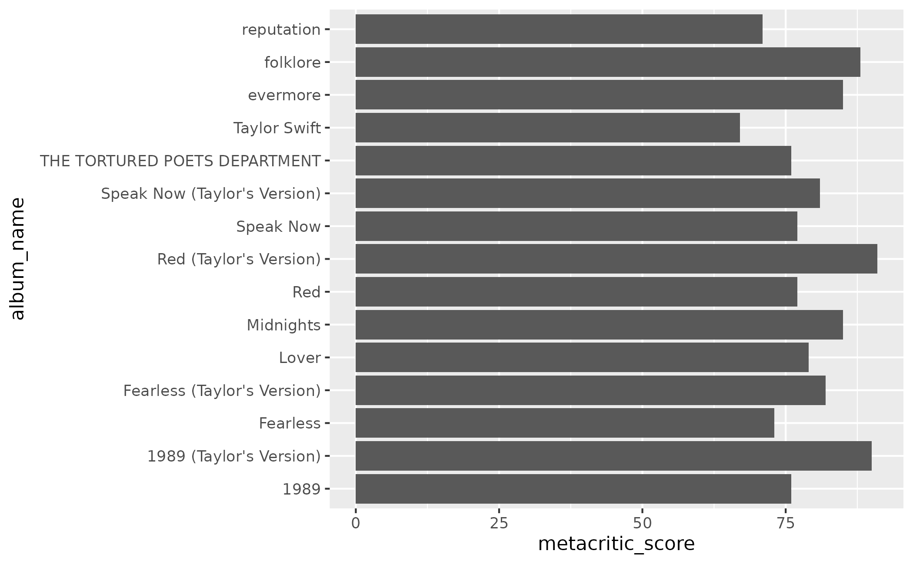
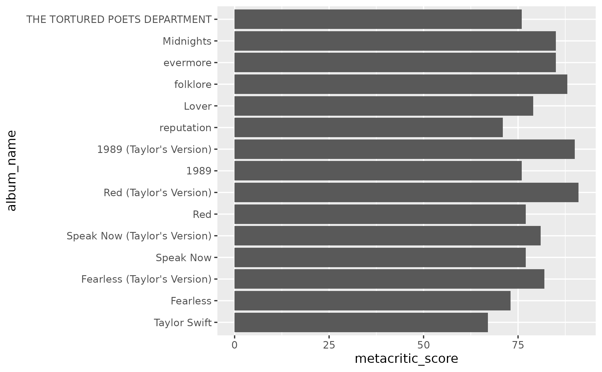

Easily create a factor variable for Taylor Swift's albums. Rather than specifying each album individually, you can use this shortcut vector that has already specified the ordering.
Format
A vector of length 16. Each element is an album name, in an order that can be used for making factor variables.
Details
Albums are listed in release order, including the "Taylor's Version" releases. That means that Fearless (Taylor's Version) comes directly after evermore, rather than after Taylor Swift or the original Fearless.
Examples
library(ggplot2)
studio_albums <- subset(taylor_albums, !ep)
# by default, albums get plotted in alphabetical order
ggplot(studio_albums, aes(x = metacritic_score, y = album_name)) +
geom_col()

# use `album_levels` to create a sensible factor variable
studio_albums$album_name <- factor(studio_albums$album_name,
levels = album_levels)
ggplot(studio_albums, aes(x = metacritic_score, y = album_name)) +
geom_col()
